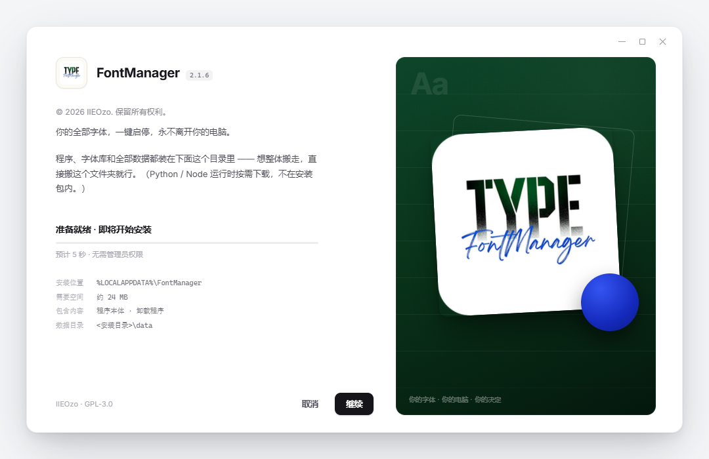
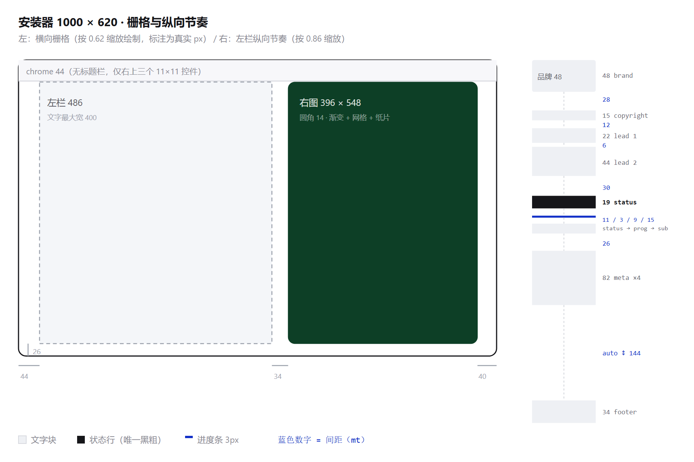
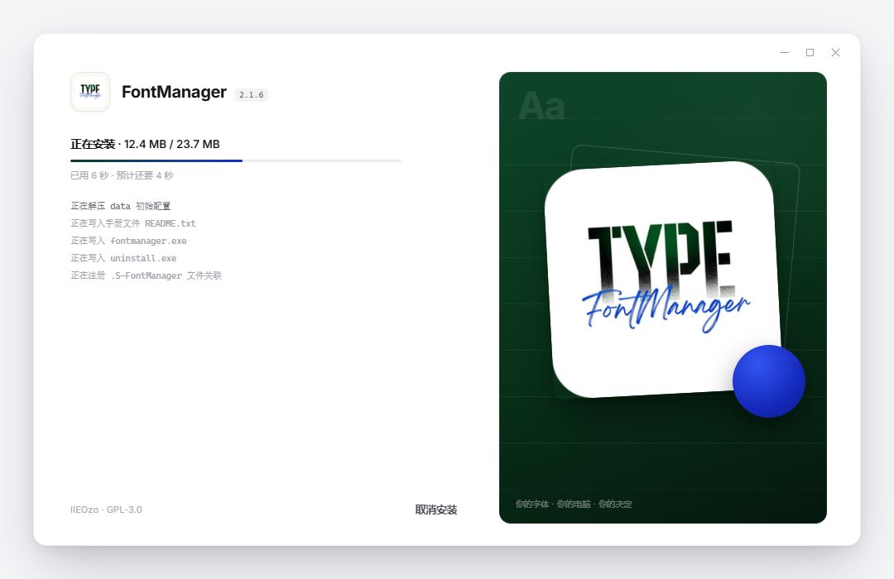
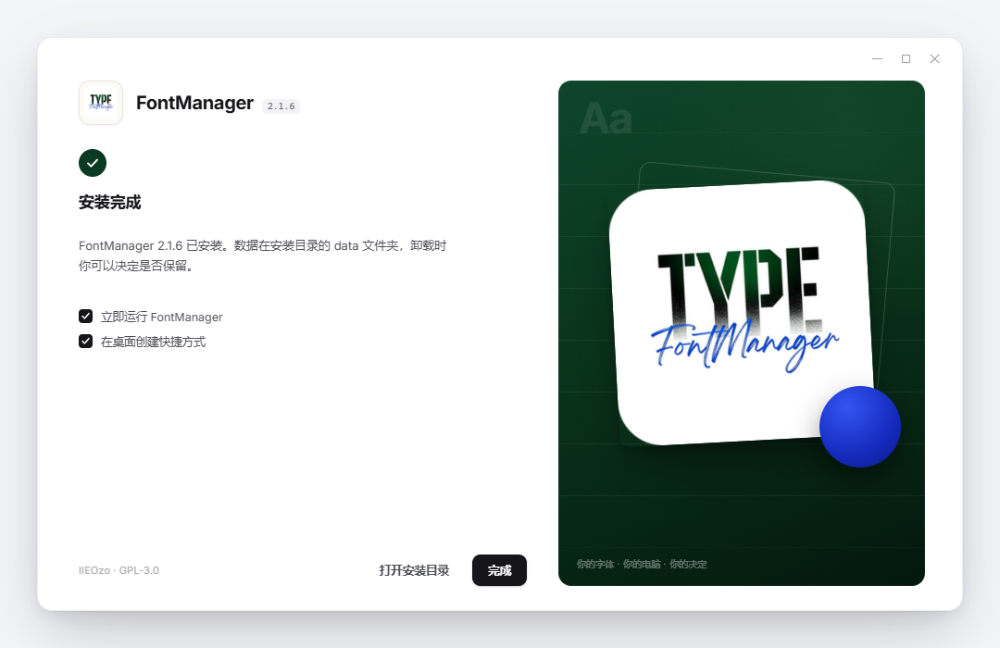
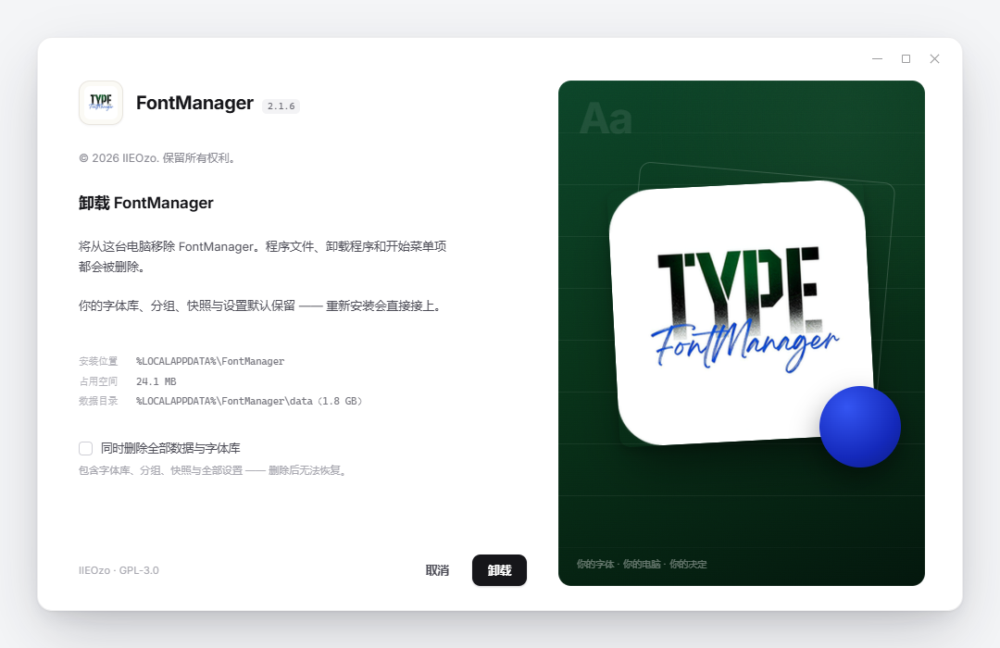
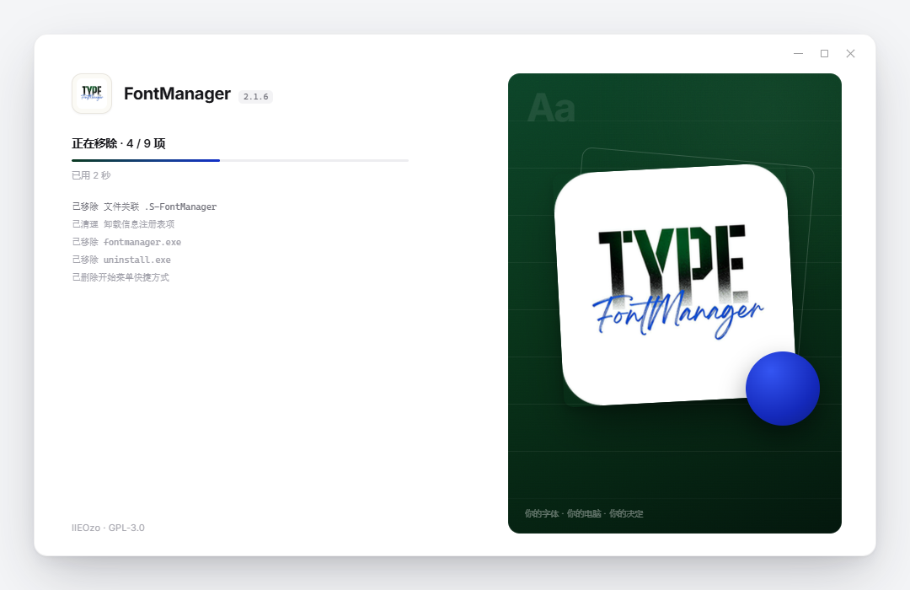
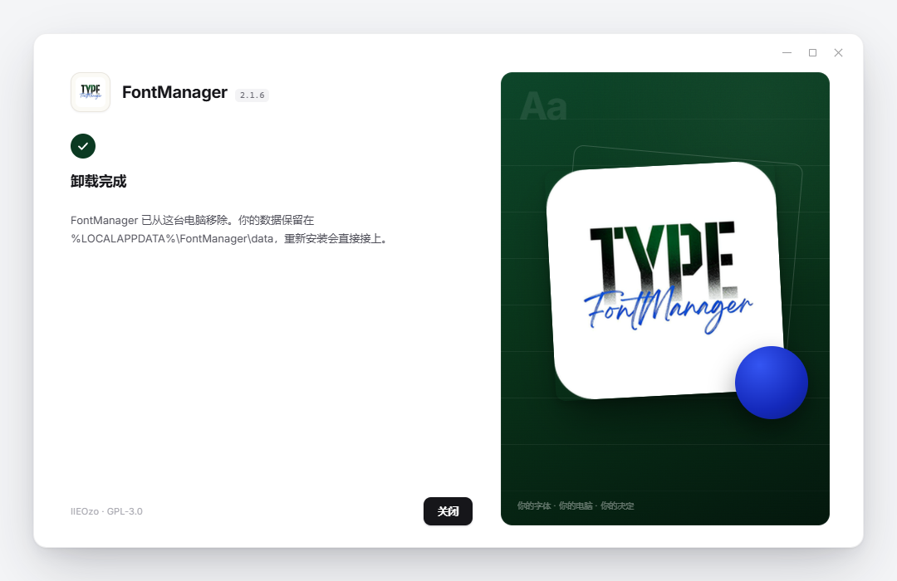
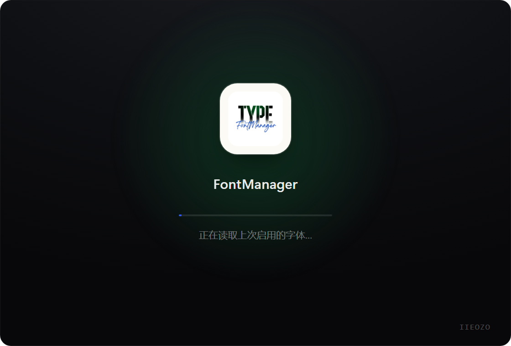
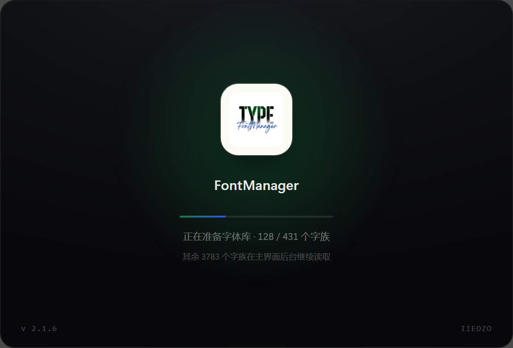
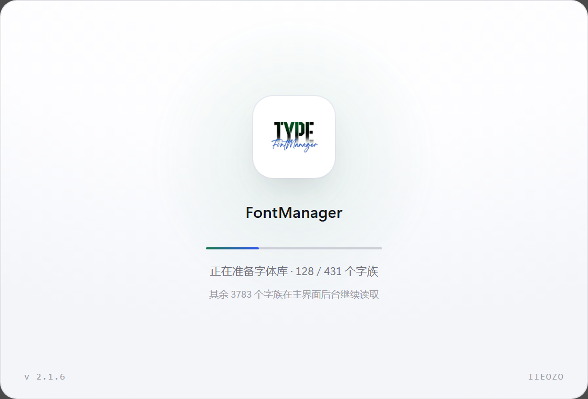

这份文档是给实现的人看的，不是提案。 每个尺寸、色值、字号、间距都能在原型docs/installer-splash-ui-demo.html里量到； 原型与本文冲突时，以原型为准，并把本文改对。
适用版本 2.1.6（基于 2.1.5） · 覆盖 安装器 4 屏（欢迎 / 位置 / 安装中 / 完成）与 启动页 1 屏 另附 NSIS 紧凑版，它是备选 / 降级方案，能不用就不用（见 §1.1、§8.0） 单位 逻辑像素（CSS px），即 100% 缩放下的 1:1 尺寸；NSIS 专有单位u在 §8 换算 语言 中英双语；文案键沿用zfm-strings.nsh与src/locales/*.json的命名习惯
| 文件 | 是什么 | 怎么用 |
|---|---|---|
docs/安装器与启动页-UI交付规格书.md | 本文，唯一事实来源 | 改设计先改这里 |
docs/安装器与启动页-UI交付规格书.html | 由 make-spec-html.py installer 生成的渲染版 | 直接发给同事 / 打印成 PDF |
docs/installer-splash-ui-demo.html | 可点原型（安装器 4 屏 + 启动页；另含备选的紧凑版） | 浏览器打开，底部工具条切屏 |
docs/shots-installer/01..04.png | 安装器四屏 1:1 截图（1080×700 = 1000×620 + 40 边距） | 贴进 PR、对照验收 |
docs/shots-installer/10..13.png | 卸载器三屏 + 1 张"数据已删除"变体（同尺寸） | 对照 §4A 验收 |
docs/shots-installer/05..07.png | 启动页 + NSIS 紧凑版 + 栅格标注图 | 备查 |
docs/shots-installer/08..09.png | 实现产物：启动页深色 / 浅色各一张，已是 1120×760 原始窗口尺寸（2.1.7 重拍） | 对照 §5.4 验收 |
docs/shots-installer/14-blocked-modal.png | 2.1.7：「FontManager 正在运行」遮罩对话框（原型 ?view=installer&step=1&blocked=1&clean=1） | 对照 §4.9 |
docs/shots-installer/15-splash-1120.png | 2.1.7：放大一倍后的启动页（1120×760 实现产物，深色） | 对照 §5.1 |
docs/shots-installer/16-cancel-confirm.png | 2.1.7：屏 3「取消安装」的二次确认卡（真实运行截图，1250×775 = 1000×620 @125%） | 对照 §4.7 |
原型的三个视图与 URL 参数（方便截图与评审，不用手点）：
| 想看什么 | 地址后缀 |
|---|---|
| 安装器第 1 屏（欢迎） | ?step=0 |
| 安装器第 2 屏（位置） | ?step=1 |
| 安装器第 3 屏（安装中） | ?step=2 |
| 安装器第 4 屏（完成） | ?step=3 |
| 紧凑版（备选，能不用就不用） | ?view=compact |
| 卸载器第 1 屏（确认） | ?view=uninstaller&step=0 |
| 卸载器第 2 屏（卸载中） | ?view=uninstaller&step=1 |
| 卸载器第 3 屏（完成 · 数据保留） | ?view=uninstaller&step=2 |
| 卸载器第 3 屏（完成 · 数据已删） | 再加 &purged=1 |
| 启动页 | ?view=splash |
| 出干净截图（去工具条、按 1:1） | 再加 &clean=1 |
这个设计（1000×620 的白卡 + 右侧整块品牌图 + 圆角）不是 NSIS 能长出来的形状。NSIS 的自绘页只有一块固定 662×416 的客户区，控件全是矩形，位图不带 alpha。所以要么缩，要么换壳：
| 路线 A：NSIS 紧凑版（降级方案，能不用就不用） | 路线 B：Tauri 独立安装器 | |
|---|---|---|
| 保真度 | 约 75%：布局对，尺寸缩到 662×416，按钮是系统灰，窗口没有圆角 | 100%：与原型 1:1 |
| 工期 | 1.5–2 天 | 5–7 天 |
| 安装逻辑 | 完全复用现有 installer.nsi（数据迁移、文件关联、清理白名单、静默 /S /P 全在） | 要在 Rust 里重写：解包、注册表、快捷方式、卸载项、数据迁移、提权 |
| 风险 | 低（只动页面，不动内核） | 中高（卸载清理白名单最容易做漏，做漏就是"删了用户的字体"） |
| 维护 | 两套外观（完整版设计只能活在稿子里） | 一套外观，以后改 UI 只改 HTML |
为什么 A 能不用就不用（不是因为它难，而是因为它是一笔一次性的债）：
什么情况下才允许用 A：这一版必须按日发版 且 没人有 5 天写安装内核。此时按 §8 落地，验收标准相应降到"布局正确、文案正确、能用"，不要求像素级还原。
建议排期：主界面与启动页照常走；安装器排 B。若 B 赶不上发版窗口，2.1.6 先不改安装器外观（保持现状），把 B 完整放到 2.1.7 —— 好过先上 A 再推倒重来。
启动页与安装器无关，它是主程序自己的窗口，直接按 §5 做，两条路线都适用。
需要产品拍板的三件事：①走 A 还是 B；②右图用"真图标白板"还是"字形满版海报"；③文案是否加一句"无账号 · 无遥测"。
参考稿（Adobe 安装-初始化窗口）的价值不在"Adobe 的样子"，在三件事：
这三点被完整继承，只是把 Adobe 的蓝+荧光换成 FontManager 自己的深林绿 + 宝蓝。
不是配色网站选的，是从 src-tauri/icons/icon.png 逐像素采样出来的：
| 采样对象 | 色值 | 用在哪 |
|---|---|---|
| TYPE 字标的绿（"Y" 的填充） | #0b3a22 ~ #0d4429 | 右图底色、完成徽标、进度条起点 |
| FontManager 手写体的蓝 | #1230c8（亮部 #3455f2） | 圆点、进度条终点 —— 全局第二强调 |
| 字标的墨黑 | #16161a | 主文字、主按钮底色 |
| 纸白 | #fbfaf5 | 图标板底、启动页图标块 |
口径修正（2.1.7）：上表的"深林绿"是 2.1.6 及以前的取色。用户 2.1.7 要求品牌色统一到图标里的宝蓝，因此绿色全部退出：右图底色换成宝蓝暗调、完成徽标与进度条中段用 --brand #1b36c4。真正生效的令牌以 §3.1 为准，本节只解释来历。
| 令牌 | 值 | 用途 |
|---|---|---|
--ink | #16161a | 主文字 · 主按钮底 · 复选框选中 |
--ink-2 | #4e4e58 | 正文 |
--ink-3 | #8a8a93 | 版权行、次要说明 |
--ink-4 | #a8a8b0 | 页脚小字、"预计 5 秒" |
--line | #ececef | 发丝线（分段、输入框） |
--brand | #1b36c4 | 品牌宝蓝（完成徽标、进度条中段）。2.1.7 之前叫 --green = #0b3a22 深林绿，已废弃，变量名别再改回去 |
--blue | #1230c8 | 宝蓝深端（进度条终点、浅色启动页进度条） |
--paper | #fbfaf5 | 图标板底 |
| 右图底色 | linear-gradient(158deg,#1e2a63 0%,#131a3f 48%,#08090f 100%) + 右上角 radial(96% 76% at 79% 6%, rgba(104,132,232,.17), transparent 64%) | 右图最底层（2026-11-14 调淡，见 §4.4） |
| 进度条填充 | linear-gradient(90deg,#0c1b6b 0%,#1b36c4 62%,#2c63ff 100%) | 唯一渐变，别扩散到别处 |
右图是深色场景，用半透明白分层：12%（描边）/ 8.5%（水印字）/ 5.5%（网格线）/ 38%（右下角小字）/ 17%（虚描边）。
启动页两套都有（§5.4）：深色那套沿用同一套半透明白；浅色那套换成 §3.1 的墨色梯度（--ink / --ink-3 / --ink-4），因为纸白底上不能再靠白色分层。
| 层级 | 完整版 | 紧凑版（NSIS） | 字重 | 用在哪 |
|---|---|---|---|---|
| 品牌名 | 20px | 14px | 700 | FontManager |
| 二级标题 | 17px | — | 650 | "选择安装位置""安装完成" |
| 状态行 | 13.5px | 12px | 550 / 600 | "正在安装 · 12.4 MB / 23.7 MB" |
| 正文 | 13px | 11.5px | 400 | 说明段落，行高 1.72 / 1.6 |
| 版权 | 12px | 10.5px | 400 | "© 2026 IIEOzo…" |
| 按钮 | 12.5px | 11.5px | 550 | — |
| 元信息 | 10.5px 等宽 | 9.5px | 400 | 安装路径、空间、数据目录 |
| 微字 | 11px / 9.5px | 9.5px | 400 | 页脚、右图小字 |
Inter Variable（仓库已有 @fontsource-variable/inter）→ 中文回落 Microsoft YaHei / PingFang SC。$(^Font)，硬写字体族会让英文系统 fallback 成别的字形。紧凑版的"像"靠字重 + 间距 + 颜色，不靠字体。JetBrains Mono / Consolas。所有数字（文件数、尺寸、路径）都用它，并且 font-variant-numeric: tabular-nums —— 否则 9→10 时右侧会横向抖一下。| 令牌 | 值 |
|---|---|
| 窗口圆角 | 16（紧凑版无，NSIS 窗口是方的） |
| 右图圆角 | 14（紧凑版 10） |
| 图标板 | 12（48×48）/ 19（主界面 78）/ 38（启动页 156，2.1.7 放大一倍后） |
| 按钮 / 输入框 | 9 |
| 胶囊 / 进度条 | 99 |
| 复选框 | 4 |
| 元素 | 阴影 |
|---|---|
| 安装器窗口 | 0 1px 2px rgba(20,20,32,.06), 0 26px 64px -12px rgba(20,20,32,.24), 0 8px 20px -6px rgba(20,20,32,.10) |
| 右侧白板（sheet） | 0 28px 52px -14px rgba(0,0,0,.55), 0 4px 10px rgba(0,0,0,.18) |
| 宝蓝圆点 | 0 14px 30px rgba(0,0,0,.42) |
| 启动页窗口 | inset 0 1px 0 rgba(255,255,255,.06), 0 1px 2px rgba(0,0,0,.4), 0 28px 60px -14px rgba(15,18,24,.5) |
| 主按钮 | 0 1px 2px rgba(20,20,32,.22) |
间距节奏：4 的倍数。左栏纵向只用 6 / 9 / 11 / 12 / 20 / 26 / 28 / 30 这几个值，不要临时加 17、23 这种数。
| 场景 | 时长 / 曲线 |
|---|---|
| 切屏（左栏内容） | 340ms cubic-bezier(.2,.8,.2,1)，opacity 0→1 + translateY 6→0 |
| 进度条增长 | 900ms cubic-bezier(.2,.8,.2,1) |
| 按钮 hover | 150ms |
| 启动页进度 | 见 §5.3（由真实进度驱动，不是定时器） |
| 减弱动效 | 用户在设置里开启「减弱动效」时：裁掉位移，只保留 opacity，时长 ×0.6 |

| 项 | 值 |
|---|---|
| 客户区 | 1000 × 620 |
| 圆角 | 16（窗口本身圆角；Windows 下需 DwmSetWindowAttribute(DWMWA_WINDOW_CORNER_PREFERENCE) 或干脆用无边框窗口自绘） |
| 边框 | 1px rgba(20,20,32,.07) |
| 标题栏 | 没有。只有 44px 高的透明条，右上角三个细线控件 |
| 控件 | 11×11，间距 20，右内边距 24，默认不透明度 42%，hover 85% |
| 背景 | #ffffff（整窗纯白，不允许铺灰） |
为什么不要标题栏：参考稿的观感一大半来自"没有重标题栏"。窗口标题由任务栏与 Alt+Tab 提供，安装器不需要再写一遍。

| 项 | 值 |
|---|---|
| 内容区 padding | 上 2 / 右 40 / 下 26 / 左 44 |
| 列 | 1fr 396px，gap 34 |
| 左栏实宽 | 486（= 1000 − 44 − 40 − 396 − 34） |
| 文字最大宽度 | 400（不要撑满 486，长行更难读） |
| 左栏纵向节奏 | 48 · 28 · 15 · 12 · 22 · 6 · 44 · 30 · 19 · 11 · 3 · 9 · 15 · 26 · 82 · auto · 34（粗体是间距，其余是元素高） |
自上而下，mt = 与上一个元素的上边距。
| # | 元素 | 内容 | 字号/字重 | 颜色 | mt | 其他 |
|---|---|---|---|---|---|---|
| 1 | 品牌行 | 图标板 48×48 + FontManager + 版本胶囊 | 20/700 | --ink | — | 图标板 48 圆角 12 内边距 5 底 --paper 边框 1px #e9e6df；版本胶囊等宽 10px #6b6b74 底 #f3f3f5 圆角 5 内边距 3 6 |
| 2 | 版权 | © 2026 IIEOzo. 保留所有权利。 | 12/400 | --ink-3 | 28 | — |
| 3 | 主句 | 你的全部字体，一键启停，永不离开你的电脑。 | 13/400 | --ink-2 | 12 | 行高 1.72 |
| 4 | 说明 | 程序、字体库和全部数据都装在下面这个目录里 —— 想整体搬走，直接搬这个文件夹就行。（末尾追加披露：（Python / Node 运行时按需下载，不在安装包内。）） | 13/400 | --ink-2 | 6 | 与主句同段组，间距小于组间 |
| 5 | 状态行 | 准备就绪 · 即将开始安装 | 13.5/550 | --ink | 30 | 整屏唯一的黑粗行，视线锚点。不再显示文件数（包内只有 2 个文件，"将写入 2 个文件"会让用户以为漏装了） |
| 6 | 进度条 | 3px 高，圆角 99，轨道 #ededf0，填充见 §3.1 | — | — | 11 | 宽度 400 |
| 7 | 副状态 | 预计 5 秒 · 无需管理员权限 | 11/400 | --ink-4 | 9 | — |
| 8 | 元信息 | 4 行键值：安装位置 / 需要空间 / 包含内容 / 数据目录 | 等宽 10.5/400 行高 1.95 | 键 #b3b3ba 值 #77777f | 26 | 两列 grid，列间距 20，最大宽 420 |
| 9 | 页脚 | 左 IIEOzo · GPL-3.0，右按钮组 | 11/400 | --ink-4 | auto | margin-top:auto + padding-top:20，永远贴底 |
从下到上：
| z | 图层 | 参数 |
|---|---|---|
| 0 | 底 | linear-gradient(158deg,#1e2a63 0%,#131a3f 48%,#08090f 100%) + 右上角 radial(96% 76% at 79% 6%, rgba(104,132,232,.17), transparent 64%) |
| 1 | 网格 | repeating-linear-gradient 每 56px 一条 rgba(255,255,255,.055) 1px 线；上下各 18% 用 mask 渐隐 |
| 1 | Aa 水印 | 46/700，letter-spacing:-.04em，rgba(255,255,255,.085)，位置 left:22 top:12 |
| 2 | 噪点 | SVG feTurbulence，opacity .09，mix-blend-mode: overlay |
| 2 | 虚描边卡 | 宽 70%，正方形，rotate(5deg)，translate(-44%,-55%)，1px rgba(255,255,255,.17)，圆角 12 |
| 3 | 白板（真图标） | 宽 70%，top:46%，translate(-50%,-50%) rotate(-3deg)，圆角 11，阴影见 §3.3 |
| 4 | 宝蓝圆点 | 88×88，right:26，bottom:128，radial-gradient(circle at 34% 26%,#6b83e0 0%,#3f4ea6 62%,#2b3378 100%)，阴影 0 14px 30px rgba(0,0,0,.34) |
| 5 | 角标 | 你的字体 · 你的电脑 · 你的决定，9.5px，rgba(255,255,255,.38)，left:20 bottom:18 |
要点：白板是"贴在蓝色墙上的纸"，所以必须有旋转 + 投影；虚描边卡是"另一张没对齐的纸"，作用是让白板不孤立。圆点压在纸角上（不是飘在角落），它把两块白连成一个整体。
2026-11-14 右图调淡（用户："蓝色浅一些，太抢眼了，不要影响用户看左边的内容" + "不要看起来太脏"）： 底#0a1550/#060e3a（L≈18%）→#1e2a63/#131a3f（L≈25%，S 保持 52%）；光斑rgba(22,44,150,.55)半径 60% →rgba(104,132,232,.17)半径 64%；圆点#3455f2系 →#6b83e0系；噪点.13→.09（底变亮后同一层颗粒会显脏）。 降的是音量（面积 × alpha），不是纯度——把饱和度压到 42% 实测发灰，跟浅色主题那次"太暗太脏"是同一个病。右图是情绪背景，本屏唯一的强调位留给左栏状态行（§2.3 硬规则 1）。
?step=0）安装位置 %LOCALAPPDATA%\FontManager · 需要空间 约 24 MB · 包含内容 程序本体 · 卸载程序 · 数据目录 <安装目录>\data2026-11-14 按实测定稿：包内只有 2 个文件（程序本体 + 卸载程序，23,706,438 B），字体库目录安装器不建、Python/Node 运行时按需下载不在包内。原稿的「148 个文件 / 约 420 MB / 含运行时」是设计占位值，已废弃，任何地方都不许再硬编码。容量写"约 24 MB"而非"23.7 MB"：元信息给的是容量预期，一位小数会被误读成精确值。
取消（幽灵）/ 继续（主）?step=1）选择安装位置（17/650，mt 30）换一个盘，字体库、缓存和全部数据都跟着走。#e4e4e8，底 #fcfcfd，内边距 0 6 0 12；等宽 10.5 显示路径，右侧内嵌 浏览… 小按钮（高 28 / 内边距 11 / 圆角 7 / 11.5px）这个位置当前用户可写 · 剩余 128 GB（11px --ink-4）需要空间 / 完成后 / 卸载时返回（幽灵）/ 安装（主）路径框是只读展示，点击/回车才弹目录选择器；不要在框里允许手打（用户手打相对路径会炸）。
?step=2）
正在安装 · 12.4 MB / 23.7 MB（数字用 tabular-nums，不要抖动）0%→50%→100% 两跳，中间十几秒不动，用户会判定卡死。分母用归档内各 entry 的解压后字节数之和（用压缩包大小会让进度在后段突然加速）。已用 6 秒 · 预计还要 14 秒（超过 60 秒后只显示"已用 X 秒"，因为估时不准反而添乱）#6f6f78），其余 #a2a2ab取消安装（幽灵），主按钮不出现（不能给"下一步"的错觉）实现口径（2026-11-14 实测后落定，别再按上面那句"按字节推进"理解）：安装引擎是 NSIS 的setup.exe /S，它不回报进度，界面只能盯落盘事实推步：fontmanager.exe出现 ≈ 解压完（62%）、uninstall.exe的 mtime 变新 ≈ 写注册表/快捷方式（88%），进程退出才是 100%。 真机上这两步之间能空 40 秒上下（24 MB 解压 + 杀软扫描），期间没有任何事件 —— 所以屏 3 必须有"我还活着"的证据，2.1.8 补了两条： ①已用 N 秒自己走字（前端 1s 计时，超 20 秒追加"正在写入，请勿关闭窗口"）。 早先它只在跳步时刷新，卡在已用 0 秒一动不动，用户原话「等太久，我还以为卡了」。 ② 填充条呼吸（.prog i.running明暗 1.6s，减动效时关闭）——只动亮度，不动宽度和百分比。 ③ 覆盖安装时不再拿"文件存在"当进度：两个文件开局就在，否则界面会在第 0.1 秒跳到 88% 然后冻 40 秒。现在主程序只在"开局不存在"时算一步；卸载程序用 mtime 变新判（WriteUninstaller是现写，mtime 一定新）；主程序File保留源文件 mtime，比对识别不出重写，只能放弃这条信号。 "预计还要 N 秒"没有实现，也不会实现：估时不准比没有更让人怀疑卡住。
日志文案要"人话"，写正在解压 python-runtime\python313.dll，不要写extracting file 137。
?step=3）
--green，白色对勾 14×14，描边 1.9安装完成（17/650，mt 16）FontManager 2.1.5 已安装。数据在安装目录的 data 文件夹，卸载时你可以决定是否保留。立即运行 FontManager在桌面创建快捷方式1.4px #cfcfd6，选中底 --ink + 白勾；标签 12.5px --ink-2，与框间距 9，两项间距 11打开安装目录（幽灵）/ 完成（主）屏1 欢迎 ──继续──▶ 屏2 位置 ──安装──▶ 屏3 安装中 ──完成──▶ 屏4 完成
│ 取消 │ 返回 │ 取消安装（需确认） │ 完成
▼ ▼ ▼ ▼
退出 回屏1 回滚已写入 → 回屏1 关窗 + 启动取消安装 需要二次确认（卡片文案：要取消安装吗？ / 已经写进安装目录的文件会被删除；如果这个目录是本次安装才新建的，目录本身也会一并清掉。 / 附注 你的字体库和已有数据不受影响。）。按钮组 取消安装（幽灵）在左、继续安装（主）在右 —— 安全默认高亮的是"继续"；Enter 与 Esc 在确认卡上都等于「继续安装」，想真取消必须正面点一次。2.1.7 之前这里没有确认，手滑一次就废掉四十多秒的安装。完成 是唯一会启动主程序的按钮；勾选框只影响启动参数，不影响安装结果。设计稿只画了顺利路径。以下 6 种必须实现，样式复用同级元素，不新造组件：
| 场景 | 显示位置 | 文案 | 交互 |
|---|---|---|---|
| 无写入权限 | 屏 2 路径框下方 | 这个位置当前用户没有写入权限。请换一个位置，或以管理员身份重新运行。 | 主按钮禁用，改红字（#e5484d，全局唯一的红） |
| 空间不足 | 屏 2 副状态位 | 需要 24 MB，这个位置只剩 8 MB | 主按钮禁用 |
| 安装失败 | 屏 3 状态行 | fontmanager.exe 写入失败：拒绝访问 | 主按钮变 重试，日志保留 |
| 已安装（升级） | 屏 1 状态行上方 | 检测到已安装 2.1.4，将直接覆盖安装（推荐），数据与字体库保留。 | 多一个 先卸载再装 的链接 |
| FontManager 正在运行 | 全窗遮罩对话框（§4.9） | 见 §4.9 | 取消 / 关闭软件并继续 |
| 静默/被动模式 | — | 不画任何界面 | /S 全静默；/P 保留进度条但跳过自绘欢迎页 |
关于 与安装目录 LICENSE 里，屏 2 底部一句 安装即表示同意 GPL-3.0 足够。安装要替换 fontmanager.exe、卸载要删除它。文件被占用时 NSIS 的 File 写不进去 / 只能挂到重启后清理，用户看到的是「装完了版本没变」「卸完了文件还在」—— 这两种现象比直接失败难查得多。所以动手之前必须先查一次，查到就停下来问用户。
| 项 | 规格 |
|---|---|
| 触发时机 | ① 首屏渲染后查一次（只在状态行提示，不弹窗）；② 点 安装 / 卸载 时查一次，有就弹；③ Rust 侧 setup_install 启动前再查一次（竞态兜底，回 setup:blocked 事件） |
| 判定 | 进程名等于 fontmanager.exe（不区分大小写），排除当前进程（安装/卸载界面自己也叫这个名字） |
| 遮罩 | inset:0，rgba(16,16,22,.3)，盖住整个窗口（含标题条），模态期间不许再点到底下的按钮 |
| 卡片 | 396 宽，padding 22/24/18，圆角 12，白底，1px rgba(20,20,32,.09)，阴影 0 24px 60px -24px rgba(20,20,32,.42)，入场 opacity+translateY(6px) 160ms（prefers-reduced-motion 下只留透明度） |
| 标题 | FontManager 正在运行，15/650，--ink |
| 正文 | 12.5px / 1.72，--ink-2。安装：检测到 N 个 FontManager 进程正在运行。安装需要替换程序文件，得先把它们关掉 —— 否则文件被占用，会出现「装完了版本还是旧的」。 卸载：…卸载需要删除程序文件，得先把它们关掉 —— 否则文件删不掉，只能留到下次开机再清理。 |
| 附注 | 11.5px，--ink-3。安装 关闭时，正在进行的操作会丢失。 / 卸载 关闭软件不会动你的字体库与设置。 |
| 图标 | 22×22 警告三角（描边 1.3，#b4322c），在标题上方，间距 12 |
| 按钮 | 右下角，间距 10：取消（ghost）/ 关闭软件并继续（墨黑主按钮，默认焦点） |
| 键盘 | Enter = 关闭并继续，Esc = 取消；遮罩开着时 Enter/Esc 不许穿透到底层屏 |
| 关不掉时 | 不关对话框，正文换成 还有 N 个 FontManager 进程没能关闭（可能以管理员身份运行）。请手动退出 FontManager 后再试。 |
| 取消后 | 回到能再按一次的那一屏（安装 → 位置屏；卸载 → 确认屏），不算失败、日志不记为 error |
| 绝不做 | ❌ 不自动关闭对话框；❌ 不自动杀进程；❌ 不用红字报错（这不是错误，是需要用户做个决定） |
落点：setup.html#runModal+src/setup/main.ts::blockedByRunning / openRunModal+src-tauri/src/setup_ui.rs::running_instances / setup_running / setup_close_running。

产品口径（PRD §3.4 / G1）：卸载器不新做视觉体系，就是安装器换掉左栏内容： 同 1000×620 窗口、同无标题栏、同圆角 16、同左栏栅格、同右图。并排截图不许看出是两个产品。 右图按 PRD Q6 默认复用同一张（"你的字体 · 你的电脑 · 你的决定"在卸载语境下同样成立： 删不删数据是你的决定）。真要换主题图，需另出一版资产，不在本版范围。
| 项 | 值 | 出处 |
|---|---|---|
| 窗口 / 圆角 / 边框 / 阴影 / 控件条 | 1000×620 · 16 · 1px rgba(20,20,32,.07) · §3.3 | §4.1 |
| 内容区 padding | 上 2 / 右 40 / 下 26 / 左 44 | §4.2 |
| 列 | 1fr 396px，gap 34；左栏实宽 486；文字最大宽 400 | §4.2 |
| 品牌行 | 图标板 48 + FontManager(20/700) + 版本胶囊 | §4.3 #1 |
| 页脚 | 左 IIEOzo · GPL-3.0，右按钮组，margin-top:auto + padding-top:20 | §4.3 #9 |
| 右图 | 整套图层（底/网格/Aa/噪点/虚描边/白板/圆点/角标） | §4.4 |
| 切屏动效 | 340ms cubic-bezier(.2,.8,.2,1)，opacity 0→1 + translateY 6→0 | §3.4 |
| 减弱动效 | 裁位移、只留 opacity、时长 ×0.6 | §3.4 |

上图是屏 2。屏 1 见本节开头那张。两屏左栏内容不同、版式同。
| # | 元素 | 内容 | 字号/字重 | 颜色 | mt | 其他 |
|---|---|---|---|---|---|---|
| 1 | 品牌行 | 同 §4.3 #1 | 20/700 | --ink | — | 版本胶囊显示本机已安装版本，不是包版本 |
| 2 | 版权 | © 2026 IIEOzo. 保留所有权利。 | 12/400 | --ink-3 | 28 | 与安装器屏 1 同位置，必须有（缺了它左栏会显得头重脚轻） |
| 3 | 标题 | 卸载 FontManager | 17/650 | --ink | 30 | 用 .h2，不是品牌行的大字 |
| 4 | 正文一 | 将从这台电脑移除 FontManager。程序文件、卸载程序和开始菜单项都会被删除。 | 13/400 行高 1.72 | --ink-2 | 12 | 把"删什么"说全：程序 / 卸载程序 / 快捷方式 |
| 5 | 正文二 | 你的字体库、分组、快照与设置默认保留 —— 重新安装会直接接上。 | 13/400 | --ink-2 | 6 | 与正文一同段组；"默认保留"是这一句存在的唯一理由，别删 |
| 6 | 元信息 | 安装位置 / 占用空间 / 数据目录 三行 | 等宽 10.5/400 行高 1.95 | 键 #b3b3ba 值 #77777f | 26 | 两列 grid 列间距 20，最大宽 420；占用空间 只算程序本体（不含 data） |
| 7 | 复选框 | 同时删除全部数据与字体库 | 12.5/400 | --ink-2 | 26 | 15×15 圆角 4，默认不勾（PRD G2）；文案沿用既有 $(deleteAppData) 措辞 |
| 8 | 危险说明 | 包含字体库、分组、快照与全部设置 —— 删除后无法恢复。 | 11/400 | --ink-4 | 9 | 挂在复选框下方、左对齐；不换红字（红是全局错误色，§4.7） |
| 9 | 页脚 | 左 IIEOzo · GPL-3.0，右 取消（幽灵）/ 卸载（主） | 11 / 12.5-550 | — | auto | 主按钮用墨黑，不用红；红只给"出错" |
正在移除 · 4 / 9 项（13.5/550，--ink，mt 26 —— 比安装屏 3 的 30 少 4，因为上面没有品牌行以外的留白可借）已用 2 秒（11/400 --ink-4，mt 9）；不显示"预计还要" —— 卸载是删文件，估时误差比安装更大，给了反而让人怀疑卡住#6f6f78 其余 #a2a2ab）已移除 fontmanager.exe、已移除 文件关联 .S-FontManager，不要写 DeleteRegKey HKCR\...
| 变体 | 正文 | 何时出现 |
|---|---|---|
| 保留（默认） | FontManager 已从这台电脑移除。你的数据保留在 %LOCALAPPDATA%\FontManager\data，重新安装会直接接上。 | 复选框未勾（默认） |
| 清空 | FontManager 已从这台电脑移除，你的数据与字体库也已全部删除。 | 复选框已勾 |
卸载完成（17/650，mt 16）关闭（主），左落款。不提供"打开安装目录" —— 那个目录此刻已经没了InstallLocation，不是常量拼接）屏1 确认 ──卸载──▶ 屏2 卸载中 ──完成──▶ 屏3 完成 ──关闭──▶ 退出（0）
│ 取消 │
▼ ▼
退出（0） 关窗 + 退出（0）卸载、Esc = 取消；屏 3 Enter/Esc = 关闭。/S 静默完全不建窗口；/P 跳过屏 1 直接屏 2；/UPDATE 不进卸载器（安装器内部调用，直接走静默清理）。| 场景 | 显示位置 | 文案 | 交互 |
|---|---|---|---|
| WebView2 不可用 | 不画 UI | 原生确认框：无法加载卸载界面。是否继续卸载 FontManager？ | 确定 → 原生静默清理；取消 → 退出。宁可难看，不许卸不掉（PRD G6） |
| FontManager 正在运行 | 全窗遮罩对话框（§4.9） | 见 §4.9 | 取消 / 关闭软件并继续 |
无权限（%APPDATA% 被改权限） | 屏 2 状态行 | <路径> 无法删除：拒绝访问 | 重试 / 以管理员身份重新运行 |
| 删除部分成功 | 屏 3 | 已完成卸载，有 3 个文件未能删除（可能被占用）。 | 关闭，并写日志到 %TEMP%\FontManager-uninstall.log |

上面这张是 2.1.7 的实现产物（1120×760 原始像素）。05-splash.png 是 2.1.5 时代 560×380 的旧渲染图，只作历史对照，不要拿它量尺寸。
2.1.7 变更（用户要求「启动页扩大一倍」）：整张卡从 560×380 等比放大一倍到 1120×760，下表所有长度/字号/间距都已按 ×2 写死。唯一不按比例走的是圆角 16 → 24： 窗口圆角属于"窗口外壳"而不是画面内容，等比成 32 会让四角圆得不像 Windows 窗口 （主窗口 1280×820 用的也是小圆角）。图标位图是 public/splash-icon.png（256×256）， 放大后可视区 120px，仍然清晰。
| 项 | 值 |
|---|---|
| 大小 | 1120 × 760 |
| 圆角 | 24（不按 ×2 走，见上），无标题栏（decorations:false） |
| 背景 | 深色 radial-gradient(120% 100% at 50% -18%, #191c21 0%, #0e0f12 52%, #08080a 100%)；浅色见 §5.4 |
| 描边 | 深色 1px rgba(255,255,255,.07)；浅色 1px rgba(20,20,32,.08) |
| 光晕 | 640×640 圆，radial(circle, rgba(100,136,255,.26), transparent 72%)，filter:blur(12px)，在图标块背后（浅色用 rgba(27,54,196,.12)/60%） |
| 元素 | 参数 |
|---|---|
| 图标块 | 156×156，圆角 38，底 --paper，内边距 18，阴影 0 28px 60px -16px rgba(0,0,0,.62) + 0 0 0 2px rgba(255,255,255,.14) |
| 名称 | FontManager，30/600，rgba(255,255,255,.93)，距图标 44 |
| 进度条 | 336 × 4，圆角 99，轨道 rgba(255,255,255,.1)，填充 linear-gradient(90deg,#17784a,#2f56ef)，距名称 48 |
| 状态行 | 21px，rgba(255,255,255,.42)，距进度条 26，tabular-nums |
| 副状态 | 18px，rgba(255,255,255,.26)，距状态行 14 |
| 页脚 | 左 v 2.1.5，右 IIEOZO，等宽 18px，rgba(255,255,255,.26)，bottom:30，左右 44 |
上表是深色那一套。启动页要跟随主界面的主题（用户 2026-11-13 要求），浅色那一套见 §5.4。
这条进度条只反映「种子集合」的装载进度，不代表全库字体。
| 含义 | |
|---|---|
| 分母 | 种子集合的字族数（不是文件数，不是全库 4214） |
| 种子集合 | 上次已启用 ∪ 全部系统字体 ∪ 所有分组内 ∪ 所有快照内，按路径去重（PRD 2.1.4 §3.1） |
| 分子 | 已完成元数据装载 + 已确认激活状态的种子字族数 |
参考量级（4214 族库 / 已启用 169 / 系统 166）：种子约 400 个，全库 4214 个。也就是说进度条跑完时，全库还剩 90% 没读 —— 这是设计意图，不是 bug。
种子集合覆盖了"用户此刻真正要用"的全部字体：上次启用的、系统自带的、分组里的、快照里的。这批就绪后，预览、启停、快照应用、套用到设计软件、分组筛选全部可用，用户可以立刻干活。剩下 3800 多个未启用字体只是"待浏览的库存"，晚几百毫秒读到不影响任何操作。
show 主窗口 → 关闭启动页。绝不等全量读取。| 情况 | 表现 |
|---|---|
| 分母未知（台账还没读完） | 不显示百分比：状态行写 正在读取上次启用的字体…，进度条切不确定态（一段 30% 宽的亮块左右滑动，2.4s 循环）。拿到总数后立刻切确定态，不倒退 |
| 超过 3 秒没跑完 | 强制 show 主窗口 并关闭启动页。种子没读完的部分退化成"主界面后台继续"，用户至少能看见界面 |
| 种子装载失败 | 不弹错、不在启动页写红字。直接进主界面，由主界面按 R-10/R-15 回退到骨架屏 + 可重试提示 |
进程启动
└─ 建 splash 窗口（256ms 内可见，先 show 再 load 前端，避免白屏）
├─ 并行：读台账 / 注册表探测 / font-cache.json 命中
├─ 逐步：种子元数据装载 → 状态行滚动数字
└─ 种子就绪（或 3s 超时 / 失败）
├─ show 主窗口（此时主界面首帧已渲染，不要再闪一次骨架屏）
└─ splash 关闭（淡出 120ms）
└─ 主界面后台继续全量 → 底部细进度 → 完成后一次性刷新列表最短显示时长：1500ms，且每次打开软件都要显示（用户 2026-11-14 要求）。
时间线：420ms → 600ms（2026-11-13）→ 1500ms（2026-11-14）。 600ms 在热缓存下仍然像"闪一下"，用户明确要求「字体少也不许一闪就没」。
实现口径（2.1.7 改过，别按老文档写）：最短显示只在原生侧判，起点是 启动页真正 show 出来的那一刻（lib.rs::SplashState::shown_at），不是进程启动、 也不是前端 performance.now()。理由：
splash_done 甚至可能比 splash 窗口还早到。所以 splash_done 里会先等启动页出现（最多 2 秒），拿到 shown_at 才补足 剩余时长，然后置 finished → 前端淡出 120ms → 关启动页 → 再 show 主界面。
前端 App.tsx 里已经没有 SPLASH_MIN_MS 了（改成 0 会把这段逻辑分裂成两份， 两个原点必然对不上）。要调时长只改 lib.rs 的 SPLASH_MIN_SHOW。
哪些情况不显示启动页（都是"用户看不见窗口"的场景，不是偷懒）：
app://activate，还原那个窗口。不要做的事：不要给启动页加"跳过"按钮、不要加版本更新检查、不要在启动页显示全库字体总数。


启动页不是"永远是深色"：它跟随主界面的主题设置（prefs.themePref = system / light / dark），system 时用 prefers-color-scheme 判，判据与 src/lib/theme.ts 完全一致（用户 2026-11-13 要求）。
几何尺寸、字号、间距两套完全一致，只有颜色令牌不同：
| 令牌 | 深色（默认） | 浅色 |
|---|---|---|
| 背景 | radial(120% 100% at 50% -18%, #191c21, #0e0f12 52%, #08080a) | radial(120% 100% at 50% -18%, #ffffff, #fdfdff 55%, #f3f5f9) |
| 描边 | rgba(255,255,255,.07) | rgba(20,20,32,.07) |
| 光晕 | rgba(100,136,255,.26) → transparent 72% | rgba(27,54,196,.12) → transparent 60%（只护住图标，不铺到状态行） |
| 图标块底 | --paper #fbfaf5 | #ffffff |
| 图标块外环 + 投影 | 0 0 0 1px rgba(255,255,255,.14) + 投影 .62 | 0 0 0 1px #e7eaf0 + 投影 rgba(20,20,32,.13)（底变白后投影必须减淡，重了发脏） |
| 名称 | rgba(255,255,255,.93) | --ink #16161a |
| 进度条轨道 | rgba(255,255,255,.1) | #cdcfd8 |
| 状态行 | rgba(255,255,255,.42) | #6f6f7a |
| 副状态 | rgba(255,255,255,.26) | #97979f |
| 页脚 | rgba(255,255,255,.26) | #9a9aa4 |
| 进度条填充 | linear-gradient(90deg,#3f5be0,#6f8cff)（淡蓝） | linear-gradient(90deg,#1230c8,#2f6bff)（不同左：纸上淡蓝会糊成灰） |
实现约束（踩过的坑，别绕开）：
:root（深色默认）→ @media (prefers-color-scheme: light)（浅色）→ :root[data-theme="dark"] → :root[data-theme="light"]。属性选择器排在媒体查询之后，用户强制才会压过系统。